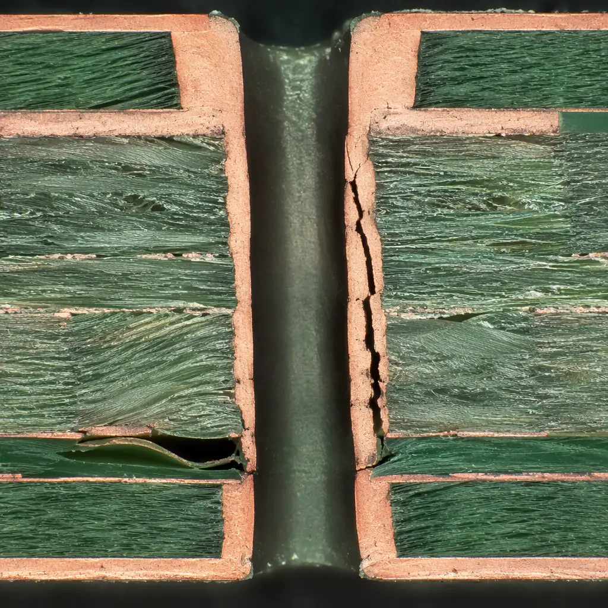
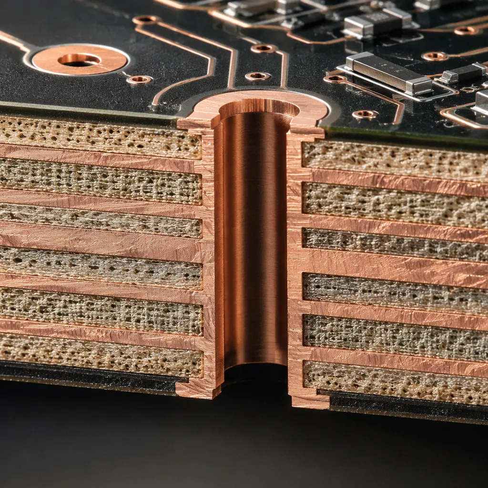

When a PCB fails in the field — a cracked BGA solder joint, a delaminated inner layer, an electrochemical migration short — the cost of not knowing the root cause is measured in product recalls, warranty claims, and lost customer trust. Systematic PCB failure analysis is the difference between guessing at a fix and eliminating a failure mechanism permanently. A well-equipped failure analysis lab can identify the exact initiation point, propagation mode, and contributing factors of a PCB failure within 48 hours, providing actionable data to prevent recurrence across the entire product line.
Huaxing PCBA operates a dedicated failure analysis laboratory at our ISO 9001 & IATF 16949 certified Shenzhen facility. Our FA capabilities include metallographic cross-sectioning with optical microscopy to 1000× magnification, SEM/EDS for elemental composition analysis, real-time X-ray CT for 3D internal inspection, dye-and-pry testing for BGA and QFN solder joint integrity, and thermal imaging for hotspot localization. Every failure analysis report includes SEM micrographs, EDS spectra, cross-section measurements against IPC-A-600 acceptance criteria, and a corrective action plan.

The 5 Core PCB Failure Analysis Methods
PCB failure analysis is a layered investigation. Each method answers a specific question, and the methods are applied in a logical sequence — starting with non-destructive techniques and progressing to destructive analysis only when necessary. The five core methods used in modern PCB FA laboratories are:
Optical Microscopy & Visual Inspection (Non-Destructive)
Initial examination under stereomicroscope at 10×-50× identifies gross defects: solder bridging, lifted pads, component misalignment, charring, and mechanical damage. Digital imaging with measurement overlay documents defect size and location before any further analysis. This step alone identifies approximately 30-40% of PCB failure root causes — especially process-related defects like insufficient solder, tombstoning, and solder balling. See our incoming quality inspection guide for standard visual acceptance criteria.
X-Ray Inspection & 3D CT Scanning (Non-Destructive)
Real-time X-ray imaging (2D) reveals hidden solder joint defects in BGA, QFN, and flip-chip packages — head-in-pillow, voiding percentage, insufficient collapse, and solder ball bridging. 3D computed tomography (CT) goes further, reconstructing the entire PCB in three dimensions to visualize inner-layer delamination, via cracking, buried void clusters, and foreign material inclusions. For high-reliability applications, IPC-7095 Class A requires BGA voiding below 15% of joint area per single void, which X-ray CT can measure with ±2% accuracy. Our BGA assembly guide details void acceptance criteria by class.
Metallographic Cross-Sectioning (Destructive)
The gold standard for via reliability, plating thickness measurement, and intermetallic compound (IMC) layer analysis. A targeted region is cut, potted in epoxy, ground through sequential abrasive grits (240 → 600 → 1200 → 2400), and polished to 0.05 μm finish for optical microscopy at 100×-1000×. Measurements include: copper plating thickness (IPC-6012 minimum 20 μm for Class 3), via wall taper angle, IMC layer thickness (target 1-3 μm for SAC305 solder on ENIG), and crack length in barrel walls. Our copper weight selection guide covers plating requirements by application.
SEM/EDS — Scanning Electron Microscopy with Energy Dispersive Spectroscopy (Destructive)
SEM provides resolution down to 10 nm, revealing fracture surface morphology — ductile dimple fracture, brittle intergranular fracture, or fatigue striations — that tells the failure mechanism story. EDS elemental mapping identifies contamination sources: chlorine from flux residue causing electrochemical migration, sulfur from packaging materials attacking silver finishes, or tin whiskers from pure tin plating. This is the definitive method for identifying the chemical root cause when optical inspection is inconclusive.
Dye-and-Pry Testing for Solder Joint Integrity (Destructive)
A fluorescent dye penetrant is wicked into any cracks or voids in solder joints under vacuum, then the component is pried off after the dye cures. UV illumination reveals dye-stained fracture surfaces — red dye = pre-existing crack before prying, metallic shine = intact joint broken during prying. Dye-and-pry is the definitive test for BGA and QFN solder joint quality, detecting cracks as narrow as 0.1 μm that escape X-ray and visual inspection. Our PCB testing methods guide compares dye-and-pry against other solder joint evaluation techniques.
Common PCB Failure Mechanisms and Their Signatures
Understanding failure mechanisms is essential for selecting the right analysis method. Each mechanism leaves a characteristic signature that an experienced FA engineer can identify:
Field Data: Analysis of 500+ PCB failure investigations across automotive, industrial, and aerospace applications reveals the top 5 failure mechanisms: solder joint fatigue (34%), conductor/plating defects (22%), dielectric/laminate failures (18%), electrochemical migration (14%), and component-level failures (12%). Over 60% of field failures trace back to a manufacturing process deviation, not a design error.
Solder Joint Fatigue — Thermal Cycling Creep Rupture
Repeated thermal expansion mismatch between component (CTE ~3-6 ppm/°C for silicon) and PCB (CTE ~14-17 ppm/°C for FR-4) causes cyclic shear strain in solder joints. Failure signature: intergranular crack propagation through the bulk solder with a characteristic "beach mark" fatigue pattern visible under SEM. Barrel-shaped crack path near the component interface. IMC layer growth beyond 5 μm accelerates failure. Prevention: underfill for large BGAs, high-Tg laminate (Tg ≥ 170°C) for high-temperature applications, and solder alloy selection with proper thermal fatigue resistance.
Conductive Anodic Filament (CAF) — Electrochemical Migration Between Adjacent Conductors
Moisture absorption in the laminate combined with DC bias voltage drives copper ions from the anode to the cathode through glass fiber interfaces, forming a conductive filament that creates a resistive short. Failure signature: dark copper-rich dendrite visible in cross-section, spanning between plated through-holes or traces with bias voltage >50V. EDS confirms copper composition of the filament. Prevention: Tg ≥ 170°C laminate with low moisture absorption (<0.1%), minimum 0.5mm hole-to-hole spacing for voltages above 100V, and conformal coating per our conformal coating guide for humid environments.
Inner Layer Delamination — PCB Laminate Separation
Separation between copper foil and prepreg, or between prepreg layers, caused by: insufficient resin flow during lamination, moisture trapped in the laminate that vaporizes during soldering (popcorning), or thermal overstress exceeding the material's Tg. Failure signature: planar void visible in X-ray (2D) or cross-section micrograph, crescent-shaped delamination around vias, and resin recession >25 μm (IPC-A-600 Class 3 reject). Cross-section measurement confirms gap width. Prevention: 6-hour bake at 125°C before reflow for moisture-sensitive boards, proper press cycle with sufficient resin flow time, and laminate selection with Tg rating 30°C above maximum operating temperature.

Building a Failure Analysis Workflow: from Field Return to Corrective Action
A disciplined FA workflow ensures consistency, prevents evidence destruction, and produces actionable corrective actions. The standard workflow follows a 7-step sequence:
Document Failure Circumstances
Record the operating environment (temperature, humidity, vibration), time-to-failure, failure mode (open circuit, short, intermittent, functional degradation), and any preceding events. This context narrows the list of candidate failure mechanisms before any analysis begins.
Non-Destructive Examination First
Optical microscopy → X-ray 2D → X-ray CT 3D. Never proceed to destructive analysis without exhausting non-destructive methods — you cannot un-cut a cross-section. Image documentation at every step.
Electrical Characterization
Curve tracer I-V measurement, time-domain reflectometry (TDR) for impedance faults, and microprobing of suspect nets to localize the fault to a specific component, trace segment, or via. Our testing methods comparison covers electrical test techniques in detail.
Targeted Destructive Analysis
Cross-section at the precise location identified by X-ray/electrical testing → SEM imaging of the fracture surface → EDS elemental analysis of contaminants. Multiple cross-sections may be needed to capture the full failure path.
Root Cause Determination & Replication
Once the mechanism is identified, replicate the failure under controlled laboratory conditions — thermal cycling to induce solder fatigue, biased humidity testing for CAF, or reflow simulation for delamination. Replication confirms the root cause hypothesis. See our dual sourcing strategy guide for risk management during FA investigations.
Corrective Action Implementation
FA report issued with: root cause statement, supporting micrographs/SEM images/EDS spectra, containment actions for affected production lots, and permanent corrective actions (process parameter change, material specification update, design rule modification).
Verification & Closed-Loop Monitoring
Monitor production for 3 months post-corrective action to confirm zero recurrence. Update PFMEA documentation and supplier quality requirements to prevent the failure mechanism from reappearing in new designs.
Procurement Insight: When evaluating PCB suppliers, ask for their failure analysis lab capabilities and request a sample FA report. A supplier who cannot produce a cross-section micrograph with IPC-6012 measurement annotations is not equipped to support high-reliability programs. The difference between a supplier with in-house SEM/EDS and one that outsources FA to a third-party lab is typically 5-10 business days in investigation turnaround time.
FA Equipment Investment: What Defines a Competent PCB Failure Analysis Laboratory
A properly equipped PCB failure analysis laboratory represents a capital investment of $250,000 to $1.2M depending on automation level. For procurement professionals evaluating supplier quality infrastructure, the minimum viable FA lab should include:
| Equipment | Minimum Specification | What It Detects |
|---|---|---|
| Stereo Microscope | 10×-50× zoom, ring light, digital camera | Solder bridges, lifted pads, contamination, mechanical damage |
| Metallographic Microscope | 50×-1000×, bright/dark field, polarizer | IMC layer thickness, via plating uniformity, glass fiber distribution |
| X-Ray System (2D) | 90 kV microfocus tube, 5 μm resolution | BGA voiding, head-in-pillow, hidden solder joint defects |
| X-Ray CT (3D) | 130 kV, voxel size ≤ 5 μm | Inner layer delamination, 3D void mapping, via crack propagation |
| SEM/EDS | ≤10 nm resolution, EDS detector | Fracture surface morphology, elemental contamination identification |
| Cross-Sectioning Station | Precision saw + auto-polisher to 0.05 μm | Sample preparation for all destructive analysis methods |
| Thermal Chamber | -70°C to +180°C, ramp ≥15°C/min | Thermal cycling for solder joint reliability testing |
Huaxing PCBA maintains all seven equipment categories in-house. This means failure analysis is performed by the same engineers who built the boards — no third-party lab turnaround delays, no chain-of-custody issues, and direct feedback from FA findings to the production floor within hours, not weeks.
Summary: Failure Analysis as a Competitive Advantage
For high-reliability electronics — automotive ECUs, medical implants, aerospace avionics, industrial safety systems — PCB failure is not an option. A systematic failure analysis capability transforms field failures from liabilities into learning opportunities. The five core methods — optical microscopy, X-ray/CT, cross-sectioning, SEM/EDS, and dye-and-pry — provide a complete investigative toolkit that, when applied in the correct sequence, identifies root causes with >95% confidence.
At Huaxing PCBA, failure analysis is integrated into our quality management system, not treated as a separate after-the-fact service. Every production lot includes cross-section coupons for plating thickness verification. Our FA laboratory supports rapid-turn investigation (48-hour reports for standard cases) and our corrective action system is audited to IATF 16949 requirements. Use our supplier audit checklist to evaluate your current PCB partner's FA capabilities, or contact our quality engineering team to discuss a failure analysis investigation.